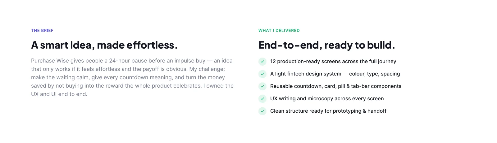
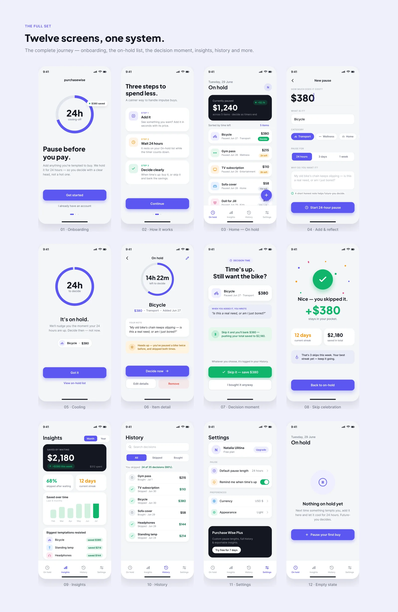

08 · iOS app · End to end
Pause before you pay.
Purchase Wise gives people a 24-hour pause before an impulse buy. The idea only works if waiting feels calm and the payoff is obvious, so the thing I designed most carefully was the wait itself.
The case in 30 seconds
- The problem
- In the first version waiting felt like a punishment: loud countdown pills, a yes/no question where colour was the only signal, and statistics that coloured the money people saved like a failure.
- What I did
- Redesigned the whole journey (onboarding, the on-hold list, the decision moment, skip celebration, insights, history, settings, empty state) and wrote the microcopy on every screen.
- The result
- 12 production-ready screens on reusable countdown, card, pill and tab-bar components, structured for prototyping and handoff.
01 — The brief
A smart idea, made effortless: make the waiting calm, give every countdown meaning, and make the money saved the reward the whole product celebrates.

02 — The decisions
Three choices that change how the wait feels.
Each item on hold carries a countdown ring around its icon. You read how much is left at a glance; the exact time is quiet text beside it.
When time is up, the app shows the note you wrote when you added the item, so you decide with a clear head, not a hot one.
Skipping earns a small celebration and a running total. Buying anyway is one tap and goes into History without a lecture, so the log stays honest.
03 — Twelve screens, one system
The complete journey: onboarding, how it works, the on-hold list, adding a pause, cooling off, item detail, the decision, the celebration, insights, history, settings and the empty state.

In short
A product about patience that never feels like waiting.
Calm where it could have nagged, and the money saved always the biggest number on the screen.